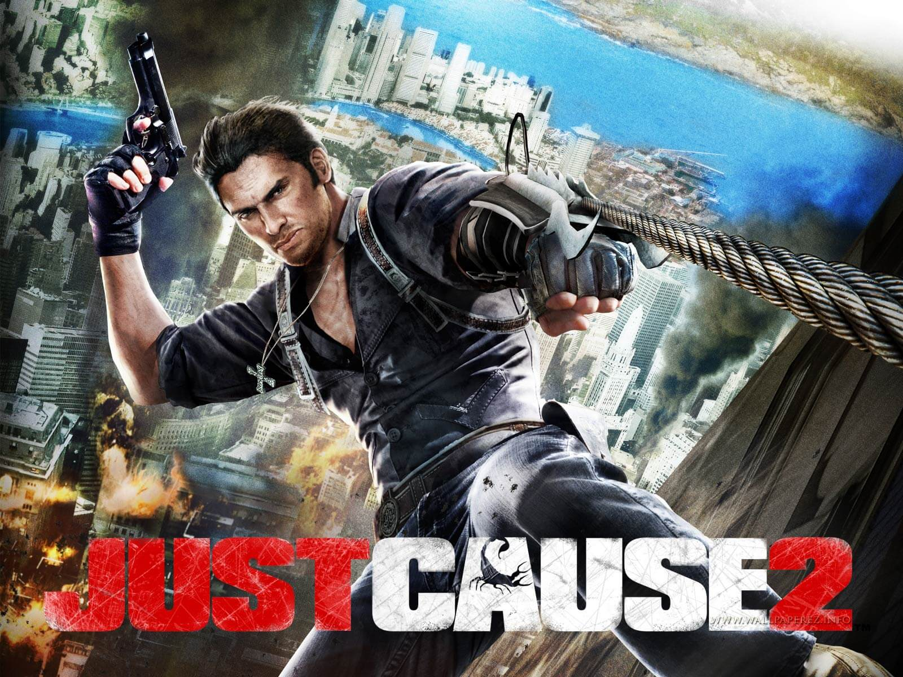

Just cause 2

Bem-vindo ao Panau-Agência Missões
Após o cutscene da abertura, você vai encontrar-se em queda livre através do céu noturno. Segure a frente para
fazer ganhar velocidade Rico como ele cai e direcioná-lo para o corpo morto de Marshal caindo. Assim que tiver
recolhido o PDA de Marshal, continuar a queda livre em direção ao marcador que aparece na tela. Abra o seu
pára-quedas como você perto do chão fora da base com seus cartões de memória para pousar em uma parte plana da
montanha.
Prossiga até a montanha abaixo as instruções na tela que funcionam como um tutorial de os controles básicos. Saiba
como usar o Grappling Hook para saltar sobre a parede e depois fazer o seu caminho através do telhado. No último
andar seguinte, você vai espionar um inimigo. Você não tem uma arma neste momento tão aponte o cursor para o
inimigo e pressione o botão gancho para arranca-lo do telhado e de sua morte. Note-se que por sua vez mira tendo
em vista, no meio da tela em uma praça quando você pode agarrar nas coisas (quer se trate de uma superfície do
veículo ou inimigo).
Grapple telhado até que o inimigo e siga o marcador na tela para recolher o primeiro cartão de memória. Faça o seu
caminho em direção ao marcador seguinte. Na ponta do seu telhado atual, você verá um par de guardas e uma pilha de
barris acima deles o seu objetivo Grappling Hook no barris e, em seguida, atear fogo a eles. Isto puxará os barris
fora de sua borda e mate os guardas na explosão que se segue. Grapple até seu telhado e em seguida recolher a
pistola da arma stash (um marcador aparecerá na tela para que você siga).
Com a pistola na mão, envolver e disparar o próximo grupo de inimigos que você encontrar. Saiba que você pode
aplicar zoom in (nos consoles, clique em no stick direito) que lhe permite objetivo melhor e escolhê-los fora com
headshots. Não esqueça de usar o Grappling Hook durante a batalha. Pode puxar os inimigos de seu rosto e você pode
até mesmo matá-los no ar para um Juggle Kill.
Siga o marcador para o Memory Card e, em seguida, próximo hop para a arma anti-aérea maciça. Objectivo, em torno
da base aérea e tudo que é vermelho com uma estrela branca. Abatendo estas vermelho e branco torres de transmissão
marcado, pratos de radar, silos, cúpulas, etc. Gerará pontos Chaos. Estes pontos se somam e desbloquear novas
missões, desafios e upgrades Black Market durante todo o jogo. Além disso, note que a destruição dessas estruturas
marcado também cortes em uma porcentagem de conclusão locais.
Cada local (assentamento, vila, base, cidade) começa em 0% completo com você primeiro descobri-lo. Destruir todas
essas estrelas vermelhas e brancas marcadas estruturas e encontrando os vários upgrades escondidos dentro das
fronteiras em torno da localização irá adicionar até igual a 100% o que significa que a localização é completo.
Isso não é obrigatório aqui ou em todo o jogo, mas sei que isso vai rack em alguns caos grave e dinheiro.
Uma vez que você teve o seu divertimento no canhão, pule e vá para o eléctrico. Aqui você vai encontrar um Weapon
Part. Coletar 5 destes permitirá a aquisição de um melhoramento da arma no mercado negro. Hop no bonde e montá-lo
até a porção superior da base. Mate os guardas que esperam por você, então, avaliar se é necessário usar o Kit
médico ou não.
Siga o marcador para o Memory Card próximo à borda que domina Panau. Recolher o Cash Stash nas proximidades.
Um soldado tem a placa ao lado da montanha através de uma outra diferença de tamanho. Objectivo e garra para o
carro eléctrico estacionário, em seguida, implantar o seu pára-quedas pouco antes de fazer contato com o bonde.
Isso é chamado Slingshotting e deve tornar-se uma manobra regular usado para mover rapidamente para fora de
situações de perigo e / ou para simplesmente se locomover. Mate os guardas nesta base e rastrear e matar o inimigo
com o cartão de memória para coletá-lo. Antes de sair, certifique-se de pegar a metralhadora perto do heliporto e
os Armor Parte perto da cúpula do radar. Coletar 5 destes irá aumentar sua saúde ao máximo, muito importante.
Kane vai agora diminuir o seu helicóptero para que você possa agarrar a ela. Você simplesmente não reagir a partir
do fundo como ela traz para a próxima seção da base. Enquanto suspenso, a picareta fora dos inimigos que tentam te
derrubar. Drop do helicóptero quando Kane diminui-lo para o chão e você agora estará encarregado de eliminar dois
inimigos artilharia montada. Use as lajes de concreto sobre a ponte para a tampa e agarrar o seu caminho de um
para o outro para se aproximar deles. Agora visam os artilheiros e use seu gancho para arranca-los livres de suas
armas. Concluir de atravessar a ponte e pegar o cartão de memória e da vizinha Parte do veículo.
Agora, terá de destruir um par de baterias SAM. Fotografe e lutar sua maneira através dos inimigos que tentam
impedi-lo de chegar à criação de explosivos acionados. Com estes, você pode lançar C4 em cada SAM e depois
explodi-los (certifique-se apenas a clara do alcance da explosão). Você agora tem que esperar para Kane para
buscá-lo. Enquanto você espera, atirar um par de explosivos na estátua gigante de Panay Baby para destruí-la para
ganhar dinheiro e caos. Afastar os guardas até helicóptero Kane aparece e depois de agarrar a ele para completar a
missão primeira agência.
Casino Bust
Charge para o casino e estar preparado para uma luta. Rapidamente tire os guardas perto da estrada, em seguida,
executar rapidamente um Dual-Hook (pressione e segure o botão Grappling Hook, em seguida, que visam a um segundo
alvo e liberá-lo) a partir da estátua gigante de um veículo nas proximidades. Uma vez que a estátua é acoplado a
um veículo, hop para ele e puxe a estátua para baixo para ganhar algum dinheiro e Chaos.
Continue lutando pelo ataque de inimigos como você fazer o seu caminho para a Officer Demolições. Cuidado com as
granadas que ele vai atirar em você. Não se jogando contra seu próprio direito de volta. Mantenha circulando em
torno dele como você descarregar a este inimigo até que ele vai para baixo. Mantenha-se afastado de seu corpo como
ele vai explodir de 3 segundos após morrer. Use sua força de sinal indicador no canto superior esquerdo do
mini-map para ajudar a localizar o Armor Parte nas proximidades.
Agora você terá que escalar o casino. Objetivo-se e lutar até o prédio. Uma vez no lado do edifício, saltar,
procurar-se, e lutam mais para cima. Repita este procedimento até chegar ao nível com os explosivos. Mate os
inimigos em torno da violação encargos então desarmá-lo. Use a parte superior da ponte céu para alcançar a torre
de casino em frente e desarmar os encargos lá como você fez o outro.
Neste ponto, um helicóptero inimigo swoop vai para as torres. Quando se chega perto o suficiente, agarrar a ele e
"entrar" no helicóptero. Isso irá disparar um evento pequeno, onde você precisa combinar os botões na tela para
bater o driver para cima e tomar o controle do veículo. Uma vez no controle do helicóptero, use-o para tirar o
segundo helicóptero.
Você vai ver agora o seu alvo Karl ficam rodeadas na passarela. Use o helicóptero para acabar com os inimigos de
ambos os lados de Karl, em seguida, digite o passarela pulando para fora do helicóptero e lutando para a própria
ponte. Uma vez dentro da ponte, uma cena irá assegurar que terminará com uma ousada fuga.
Você vai agora encontrar-se no chão com o carro de Karl sob um naufrágio. Dual-Hook seu carro próximo ao trator,
em seguida, puxe-a de estacionamento gratuito. Pegue o rifle do lado do carro e os Weapon Part a partir do prédio
vizinho, em seguida, Stun Ir para veículo de Karl. Aqui você precisa para proteger Karl como ele dirige com você
em pé sobre o telhado. Eventualmente caminhões militares vai lhe perseguir. A melhor maneira de lidar com eles é
por demais no telhado Karl e simplesmente fotografar os pneus da frente ou pelo Dual-Ligação à frente de um
caminhão para o chão na frente dela que flipping fim de enviá-lo ao longo final. Basta manter isso até você e Karl
escapar ea missão de fechamento cinematográfica é acionado.
Ultimate Freedom
Após completar Casino Bust, você vai desbloquear o mercado negro e desbloquear a sua
liberdade de fazer o que quiser. A idéia é para que você possa causar o caos para ganhar
Chaos Pontos de qualquer forma você vê o ajuste que irá desbloquear a próxima missão da
Agência. Você ganha pontos por descobrir assentamentos em toda a ilha, destruindo as
estruturas militares, encontrar itens de recursos (armas, armaduras e equipamento do veículo),
tendo a coronéis, completando desafios, e até mesmo trabalhar com as facções ilha.
Você provavelmente vai querer começar a trabalhar com as três facções.
O Tigre Branco
Ao criar o caos suficiente para desbloquear esta missão, você vai se encontrar com um contato em uma pequena
aldeia de Bandar Lengkok Sungai. O contato irá informá-lo que Ken Pang sabe o paradeiro do Tigre Branco, Tom
Sheldon. No entanto, Pang está prestes a ser executado. Siga o marcador que aparece na tela até o rio e para a
casa de apostas. Sua primeira ordem do negócio, aqui é tirar todos os inimigos. Comece com as altas torres.
Grapple rapidamente a cada um deles e mate o sniper dentro de todas as torres. Agora mate os inimigos no meio da
aldeia para terminá-los todos fora.
Uma vez que todos os inimigos foram mortos, lutar até a torre marcados e usar o walkie-talkie. O carrasco Pang
trará à tona. Assumir rapidamente o carrasco, em primeiro lugar para Pang livre. Agora você vai precisar proteger
Pang de inimigos como você faz seu escape. Mate os dois que ladeiam você siga Pang em torno das passagens
diferentes. Apontar para headshots para fazer o trabalho rápido de todos os inimigos que estão atirando Pang.
Mantenha Pang vivo e que ele vai oferecer para levá-lo para o Tigre Branco. Hop sobre a bicicleta da sujeira e
siga Pang pelos desfiladeiros do deserto. Partway ao longo da viagem você será emboscado. Pule fora de sua moto e
use as pedras grandes para cobrir o que abre caminho através dos inimigos aqui. Depois claro hop, no próximo par
de bicicletas e continuar a seguir Pang ao destruído e praias navio no meio do deserto.
Stock-se em munição na entrada, em seguida, cobrar e tomar os inimigos em frente ao seu primeiro. Há um coronel
atrás da casa no meio. Tente não se envolver nele até que você matou todos os inimigos que cercam a área. Use seu
gancho para evitá-lo e fechar em torno. Embora tendo os inimigos de base, procure um revolver que um deles deveria
estar carregando. Safe este revólver até que você acopla o coronel e usá-lo apenas em headshots. O coronel é
fortemente blindados e headshots são a única coisa que pode prejudicá-lo.
Retire o coronel com headshots depois recolher os dados do cartão, ele cai e ligá-lo em seu PDA. Após a cena
breve, você será atacado por um helicóptero. Grapple para o helicóptero e seqüestrar-la do inimigo. Agora siga o
marcador na tela para a localização do Tigre Branco.
A cena será desencadeado depois de terra no marcador destino que irá apresentá-lo a Tom Sheldon. Você está pouco
reunião será interrompida quando a tempestade inimigos das ruínas. Pegue a mini-metralhadora que tem munição
infinita e usá-lo para cortar através de todos os bandidos. Siga Tom e veja o que forma ele enfrenta inimigos para
saber onde será que vem. Você vai acompanhar abrandamento Tom pelas ruínas matar hordas de inimigos ao longo do
caminho. Eventualmente você expulsa-los todos e completar a missão do Tigre Branco.
Tom diz-lhe para manter o bom trabalho de causar caos em torno das ilhas. Volte para o seu trabalho com as facções
para aumentar o caos suficiente para destravar a missão da Agência seguinte.
Mountain Rescue
Agora você deve salvar um aliado do companheiro que está sendo torturado em uma grande base do governo montanha.
Ela está sendo realizada nas profundezas da base. Para desenhar o seu torturadores e la, você precisa destruir os
4 geradores de ventilação da estação para parar de fornecer as instalações "do ar. Pegue os explosivos Provocado
deixou para você, então hop no helicóptero e voar para a base.
Enquanto o helicóptero é grande para causar o caos na base, não se pode destruir os 4 geradores escondido dentro
de cada respiro da estação. Você também deve saber que a base tem inúmeras SAM Sites (a menos que destruiu
anterior), que vai tentar te derrubar. O melhor curso de ação é simplesmente abandonar o helicóptero como você
perto da base, ignore causando caos aleatório, uma vez que vai atrair mais atenção indesejada e focar apenas em
destruir as quatro estações do respiradouro.
O tempo está do seu lado durante esta missão. Não há tempo limite para se sentir livre para tomar o seu tempo.
Você vai querer trabalhar o seu caminho para o primeiro suspiro da estação e tirar todos os inimigos que o
rodeiam. Basta escolher um ponto de boa cobertura, onde você não pode ficar ladeado (coloque as costas para um
precipício) e colegas em torno do canto e pegar os inimigos fora. trabalho Retardar o seu caminho em torno da
estação de limpá-lo dos inimigos até que o exterior é claro antes de se dirigir para dentro. Há geralmente será um
inimigo ou dois dentro do respiradouro própria estação. Seja cauteloso ao entrar e tirá-los rapidamente. Plante
dois explosivos nos geradores, em seguida, sair do edifício e detonar eles.
Agora hop em um caminhão e levá-la para mais perto do respiradouro próximo da estação e repita o processo.
Novamente, você tem todo o tempo que você precisa para levar o seu tempo. Correndo através de cada seção para a
atmosfera da estação é uma ótima maneira de começar outmanned e mortos. Fique de olho nas varandas estação de
artilheiros montado e arranca-las com seu gancho grappling. Destrua o segundo gerador como você fez o primeiro, em
seguida, avançar até a terceira estação. Seja mais cauteloso porque há um inimigo em uma sacada com um lançador de
foguetes. Novamente, basta encontrar algum abrigo sólido e colegas em torno dele, tendo os inimigos até que você
pode manchar o homem foguete. Ou arrancar-lhe fora de sua vara ou matá-lo para se livrar dele. Agora continue a
destruir o terceiro gerador e seguido pelo quarto.
Depois de quatro estações de ventilação foram destruídas, você precisa fazer o seu caminho de volta para o fundo
da base para a entrada. Siga o marcador na tela e estilingue o caminho de volta até a entrada que mais parece o
vale. Quando chegar esta entrada, você será atacado por ninjas. Ninjas são irritantes porque amam a desaparecer
quando você está atirando neles e você não pode usar o seu gancho sobre eles. Você só precisa colocar em sua arma
de fogo com até desaparecerem depois encontrá-los novamente e repita. Concentre-se em matar um ninja em um tempo
para tirar do quadro completamente antes de ir depois da próxima.
Depois de matar os Ninjas, dirija-se à entrada para descobrir que eles estão se movendo através do seu aliado
caminhões em todo o lago gelado. Ir para baixo e queda livre para o lago, em seguida, estilingue seu caminho para
o caminhão estacionado ao longo da costa nevado direita. Conduzir o caminhão em alta velocidade em direção ao
caminhão marcado na tela. Ignorar tudo, mas o caminhão marcada. Quando você chegar perto dele, Stunt Salte sobre a
sua própria luta para, em seguida, o caminhão-alvo. Mover-se para a volta dele e atirar os passageiros ninja
inimigo, em seguida, roubar o caminhão com Jade nele para provocar um cutscene e completar a missão.
Três Reis
Sheldon e você deve tirar três "mal" os líderes que acontecem a todos ficar no mesmo hotel, os Três Reis. Você
começará a queda livre em direção ao hotel. Puxe o seu pára-quedas como você perto da torre marcados e agarrar o
seu caminho para telhado esta torre. Aqui você irá enfrentar o líder chinês. Rapidamente strafe para a direita ou
esquerda para fazer o seu caminho em torno de cada lado do palco o chefe está em pé.
Você é a primeira prioridade é tirar seus capangas. Vá para trás do palco e usá-la como capa. Lentamente, fluência
em torno dele e pegar todos os inimigos para fora. Agora focalize sua atenção sobre o líder. Você não pode
agarrar-lo assim que você precisa se concentrar em tiros na cabeça a fazer o maior dano a ele. Mantenha mover-se
para evitar a sua firecrakers. Se você ficar ferido, rapidamente esconder e esperar até que a tela parar de piscar
vermelho. Mantenha nele até que você o matou.
Sheldon vai swoop em seguida, com o helicóptero. Grapple para o fundo e ele irá transportá-lo do telhado próximo e
patrão, o russo. Drop do helicóptero para a escadaria para a tampa. Na escada, basta aguardar capangas do russo
para aparecer assim que você pode atirar e matá-los antes que se tornem um problema. Evite a frente do palco como
ele está alinhado com as minas para proteger a Rússia de você.
Em vez disso, correr para trás do palco e esperar por Sheldon para começar a disparar. Quando ele faz, lutar até o
lábio superior muito da parte de trás do palco. Não subir ao palco como ela é forrada com mais minas. Em vez
disso, simplesmente pendurar na parte de trás do palco e filmar o russo sobre a borda, enquanto ele se concentra
na chopper Sheldon. Quando os russos se vira, para enfrentá-lo, desça e espere Sheldon para atacar novamente.
Manter em que o russo de lado ou para trás quando ele é focado em Sheldon eventualmente derrotá-lo.
Por último é o líder japonês. Ir a partir de sua torre e use o pára-quedas e gancho para chegar à torre final.
Suba no telhado, em seguida, desça as escadas. Abra caminho entre os guardas no corredor, use granadas nas duas
portas suite. Isso vai provocar uma breve cena para introduzir o final dos três chefes.
Você é a melhor aposta novamente é se esconder atrás do palco principal. Este chefe vai ter um satélite laser
constantemente explodir o telhado, mas não vai atrás do palco. A partir daqui, em torno de peer qualquer canto do
palco e tirar os capangas do chefe e atire quando sempre pisa em vista. Uma vez que a área é limpa de capangas,
você pode ser um pouco mais corajoso e se aventurar um pouco mais. Basta manter um olho para o laser de cima como
você detonar no chefe. Mais uma vez, sempre que pisca a tela vermelha, rapidamente se abrigar atrás do palco.
Manter estalar para fora e tiro o chefe como este até que você derrotou. Com todos os três chefes ido, a missão
terminará.
Na cova
É hora de colocar pra baixo Baby Panay. Primeiro você precisa escolher uma facção para ajuda-lo. Não importa o que
a facção que você escolher. história não muda nada ou estratégia-wise. Escolha e visite a facção de sua escolha
para ser transportado para a base. Aqui você vai ser acompanhado por vários aliados da facção que você escolheu
quem vai ajuda-lo em seu assalto na cova secreta de Panay. Sua vida e morte não tem descobrindo sobre o sucesso da
missão. Eles estão lá simplesmente para oferecer apoio para você enquanto eles podem survivie.
Você está primeiro emprego é alcançar Rally Point. Use a tampa e tomar o seu tempo como você faz seu caminho até a
base lado da montanha. Pesquisar sólido tampa e em seguida peer lentamente em torno do canto e buscar fora de cada
um inimigo ao mesmo tempo. Correndo através de pistolas blazin 'é uma ótima maneira de ser morto. Quando você
chegar ao ponto de encontro, um caminhão blindado vai estourar através das portas. Rapidamente alvo a arma montada
no topo dela e puxá-lo para fora da arma. Uma vez que a zona é calma, vá até as escadas do outro lado da parede
maciça.
Agora você tem que tirar três canhões anti-aéreos. Prossiga até a escada para cada nível. Mais uma vez, levar o
seu tempo e usar como capa cuidadosamente tirar um inimigo de cada vez. Mantenha sua maneira de trabalhar a cada
nível até chegar ao primeiro AA Gun. Limpar a área dos inimigos, em seguida, plantar um explosivo provocou nele e
detoná-la para destruir a arma. Neste ponto, um engenheiro de facção será deixado para operar o painel de controle
da arma. Deixe-o aqui como chegar até a gôndola, que o levará até a próxima seção da base. Assista fora para o
sniper à sua esquerda. O chão está cheio de inimigos e sua melhor opção é lutar imediatamente para o telhado para
a esquerda quando a gôndola chega a uma paragem. A partir de aqui, entre colegas sobre a borda e apanhar os
inimigos abaixo.
Saber que há uma metralhadora montada ao lado da arma AA aqui para usar o cuidado extra. Depois de ter tomado a
todos, destruir essa arma AA com outro explosivo acionado depois hop na gôndola próxima e montá-lo para o local
final AA arma. Mais uma vez, use os telhados para ajudá-lo a afinar as forças de terra padrão aqui. Esteja ciente
de que existem ninjas aqui. Há uma espingarda para a esquerda da gôndola que funciona bem contra os Ninjas. Uma
vez que todos os inimigos foram derrotados, destrua o terceiro AA Gun, hop na gôndola passado e montá-lo no rosto
tamanho da montanha de Baby Panay.
Use o painel de controle aqui para abrir a boca de Panay e entrar na base secreta. Slingshot outro lado da sala
grande cúpula para o lado oposto para provocar um cutscene. Após a cena, um helicóptero irá baixar para a cúpula e
uma tonelada de inimigos irão inundar a área mais baixa.
Embora seu primeiro instinto será provavelmente para roubar o helicóptero, sei que é quase impossível. Há tantos
inimigos abaixo, e três passageiros helicóptero para fotografar, que você vai ser a céu aberto por muito tempo com
sucesso seqüestrar ele, e mais que provável morrer durante o processo.
Em vez disso, lidar com a borda exterior superior de sua posição inicial. Nesta borda superior, strafe em torno do
quarto tiro no helicóptero nonstop (fuzis ou metralhadoras os melhores trabalhos). Mantenha strafing e atirando
até que o helicóptero explode. Agora faça o seu caminho até os níveis mais baixos meio da cúpula. Retire todos os
inimigos aqui e então cortar o painel de controle no meio. Depois de definir o local para explodir, lutam até a
saída e passar pelo estreito túnel antes de todo o lugar se resume em cima de você.
A Just Cause
Esta missão começa automaticamente quando você termina o anterior. Pule para o próximo helicóptero e voar para
fora em direção ao marcador na tela. Como você perto do destino no meio da água, você verá que ele é um
sub-maciço. choppers Enemy vai começar a pulular em sua direção. Mantenha-se baixa para a água como o sub está
alinhada com quatro SAM Sites que irá te derrubar, se você chegar ao alto. Strafe e círculo, enquanto o sub
atirando os helicópteros inimigos e os locais dos SAM. Uma vez que os helicópteros e SAMs são destruídos, voar
diretamente sobre o centro da sub explosão e os soldados correndo ao longo do topo. Uma vez que o sub estiver
desmarcada, a terra do helicóptero e entrar na sub no pé.
Lá dentro, você vai enfrentar fora contra um inimigo familiar. Ele empunha um lançador de foguetes para que se
proteger atrás das pilhas de barras de ouro. Não tente apressar o patrão, não há armas torre que cortar para baixo
se você faz. Em vez disso, use o ouro para cobrir e fazer o seu caminho até o mais próximo do meio da pilha. Mate
o par de ninjas que protegem o patrão então mirar em que o próprio chefe, entre explosões de foguetes.
Basta ficar para trás o ouro até que ele dispara foguetes 4-5 em sucessão, em seguida, sair e filmar o chefe por
alguns segundos, em seguida, tomar a tampa para trás o ouro antes de ele dispara mais foguetes. Repita isso, mas
sei que ninjas mais aparecerá cada vez que você fizer um prejuízo significativo para o patrão. Quando o fizerem, o
foco de matar os ninjas então centrar a sua atenção no chefe.
Mantenha-se escondendo da chuva de foguetes e, em seguida, pulando para fora para a parte aérea até as vaias que
você esvaziou seu medidor de saúde. Isso acionará uma outra cena que irá celebrar com você montar em foguete
maciça. Haverá três foguetes em uma linha que vai encontrar-se equitação e um rocket na frente de você com o
patrão sobre ele. Você precisa atirar no chefe para derrubá-lo, então rapidamente cortar o foguete você está
montando. Depois de desarmar os foguetes hop, para outro e repita. Desarmar os três foguetes disparando o patrão
até ele cair, então hop em seu foguete para acionar a cena final. Parabéns, você venceu Just Cause 2!
Você agora vai entrar Mercenary Mode. A ilha de Panau é o seu playground pessoal. Você pode continuar a completar
missões facção, coletar itens e simplesmente provocar o caos ao seu índice dos corações.
A fim de desestabilizar Baby Panay controle ao longo da ilha de Panau, Rico vai precisar de trabalhar com três
facções rivais e ajudá-los a espalhar a sua área de influência. Essas facções não instantaneamente Rico confiança
para que ele terá que ganhar sua confiança, ajudando-os inicialmente concluir uma aquisição Stronghold. Estas
missões amplia a cada área de influência facções que nas voltas mais sobre as causas do caos Panau que ajuda a
situação Rico para tirar Baby Panay.
Cada facção tem um total de três missões de aquisição Stronghold. O primeiro de cada facção é obrigatório para
destravar cada uma das missões do grupo Facção. O segundo eo terceiro vai desbloquear ao longo do tempo que você
completar missões e fazer com que Chaos Faction mais por fora da ilha. Concluindo Stronghold aquisições é útil
como fornecê-lo com outras bases de operações em torno da ilha. Eles geralmente são o lar de um número de veículos
que será à sua disposição a partir de então em diante.
Reapers-Stronghold aquisições
Rocket Science
Localização: Gunung Facilidade Pangkat Gila
Você deve completar esta missão para destravar novas missões Reaper Faction. Você será apresentado ao líder
Reaper, Bolo SantosI, no início desta aquisição. Você está tarefa é guiar e proteger um técnico Reaper como você
infiltrar numa base inimiga (fortaleza). Felizmente alguns soldados adicionais Reaper vai acompanhar e ajudar você
durante a aquisição.
Charge da fortaleza com a sua tripulação e tirar os inimigos que guardava a entrada. Sua equipe irá pendurar para
trás, enquanto você terá que lutar o seu caminho ao longo das paredes base usando o gancho e abra o portão da
frente do lado de trás. Mantenha-se atento para as estruturas do inimigo para destruir (marcados com estrelas
vermelhas e brancas), que vai ganhar o caos adicionais. Também manter um olho em seu Resource Indicator para o
canto superior esquerdo do seu mini-mapa. Isto irá levá-lo a diversos arma, veículo, armas e peças em toda a base.
Eventualmente você vai atingir o centro de comunicações que o técnico terá que invadir. Pule para a arma montada
perto do técnico e usá-lo para defendê-lo das ondas de inimigos que derrama para as suas localizações. Após
derrotar todos eles, o comandante da fortaleza swoop vai com um helicóptero. Saia do canhão montado e, em seguida,
lutar para o helicóptero e sequestro é do comandante para derrotá-lo. Cuidado com os mísseis SAM uma vez no
helicóptero, se o técnico ainda é hacking.
Uma vez que a corte está completa e derrotar o comandante, que tenham concluído com êxito esta aquisição
Stronghold. Isto irá desbloquear Missões Reaper Faction para você enfrentar. Esta localização também vai se tornar
um ponto de desova disponíveis.
A Segunda Emenda
Localização: Kem Depot Supply Gunung Gurun
Aproxime-se do portão da instalação e utilização das pedras grandes para a tampa. Yank os guardas para fora da
torre para Kills Fall em seguida, atirar os inimigos em frente ao portão. Grapple em qualquer torre e usá-lo para
cobrir enquanto você apanhar os inimigos dentro da base. Quando a barra estiver limpa, desça no interior das
muralhas de base e, em seguida, cortar os comandos para abrir o portão da frente de sua equipe.
Você vai varrer através da base à esquerda e depois vire à direita. Use as barreiras de concreto para a cobertura
do artilheiro montado na extremidade da estrada. Quer pegá-lo fora por um tiro na cabeça ou agarrar e arrancar-lhe
a partir de sua arma. Cerca canto esquerdo depois será um sniper em uma torre. Yank-lo com o seu gancho e, em
seguida, vá até a rampa. Vire à direita no topo da rampa e atirar uma granada contra o jipe estacionado com o
artilheiro montado. Depois que ele foi tratado, de cabeça para baixo a rampa próxima a entrar na parte final da
base.
Aqui, você vai precisar tirar o jipe e artilheiro no primeiro meio. Então estilingue-se o artilheiro montado na
parte traseira distante. Tirá-lo rapidamente, em seguida, saltar sobre a sua arma e usá-lo para disparar todos os
inimigos no seu momento certo. Com a área limpa, o técnico está a proteger vão começar a invadir o centro de
controle e você precisa mantê-lo protegido contra as ondas de inimigos próximos.
O primeiro é uma onda de soldados simplesmente pé à esquerda da estrada principal. Acabe com eles rapidamente e
estar pronto para dois jipes para puxar para cima a partir da esquerda. Uma vai estacionar na esquerda e outra à
direita. Retire o artilheiro de cada jeep e depois preocupar-se destruir os jipes. Após os jipes, o Comandante
Stronghold aparecerão em um veículo pesadamente blindados descendo a estrada principal. Mesmo que você não pode
vê-lo diretamente, comece atirando em seu ícone que aparece na tela. Objetivo logo abaixo a parte do meio do
círculo do ícone. Coloque dentro dele até que tenha destruído o que irá completar esta aquisição.
Compostos químicos
Localização: Pemainan Facilidade Racun
À medida que a tempestade de entrada para a instalação, atente para o lançador de foguete de dois totting soldados
nas torres de cada lado da porta da frente (apenas após a depósitos de combustível). Use seu gancho para puxá-los
de suas torres. Mate todos as forças de terra, em seguida, lutar por cima do muro. Blast os inimigos do outro lado
e depois cortar os controles para baixar o portão. Faça seu caminho até a rampa de acesso e volta para a esquerda,
atirando em qualquer um que saia para pará-lo.
Na próxima esquina à direita, use a estrutura certa para cobrir como você puxa cada um dos inimigos na passarela
para baixo. Em seguida, sair e empurrar o artilheiro montado a partir de sua minigun. Retire a minigun e marcha
através do composto de resíduos, que com ele a qualquer um que estiver em seu caminho. Tente não bater o depósito
de combustível à muito para trás até que o grupo de inimigos esgotar-se em frente dela. Depois, basta fotografar o
depósito para levá-los todos de uma vez. Luta seu caminho fora e volta para a área aberta.
Yank sniper para fora da torre, em seguida, acabar com os inimigos. Depois de limpo, o técnico vai começar a
invadir o centro de controle. Retire a arma montada nas proximidades, se você definir o anterior para baixo. Use-o
para destruir os dois caminhões que aparecem e depois cortarem os soldados que se apressam a partir da direita
para trás. Preste atenção para o ícone do Comandante Stronghold apareça na distância. Use você minigun para
explodi-lo fora do céu, que irá completar esta aquisição.
Baratas
Livre Comércio
Localização: Pelabuhan Saudagar
Você vai precisar para concluir esta missão pública de aquisição para destravar as missões da Baratas "Faction.
Razor (o líder das baratas) vai chopper você e alguns de seus tripulantes para o porto, ele quer capturar. Você e
seus filhos terão de explosão seu caminho através do porto e, em seguida, o técnico terá de invadir o centro de
comunicação para obter o controle do reduto. Derrote os inimigos na entrada depois de agarrar as paredes e abrir
as portas para seus aliados.
Luta seu caminho através do armazém e para fora do lado oposto. Use seu gancho para puxar o atirador fora da borda
guindaste alto para a sua equipa pode continuar. Faça o seu caminho através do armazém ao lado da expedição dos
inimigos na ponte no interior de seu companheiro baratas. Para o outro lado desta estrutura que você vai encontrar
um artilheiro montado. Use seu gancho para fechar em fechar e depois tire todos os inimigos neste pequeno
acampamento (incluindo o atirador montado).
Agora hop para a arma montada e começa a cortarem os inimigos rush da direita como os hacks técnico do centro de
coms.
Eventualmente, um par de caminhões unidade da direita para a esquerda. Não se preocupe em atirar no soldado que
saltam, apenas balas para descarregar os caminhões até explodir e levar os soldados com eles. Pouco tempo depois
aparecem os caminhões, o comandante da fortaleza vai voar com um helicóptero. Pule fora a arma montada e lutar
para o helicóptero e sequestro é do comandante para completar a missão.
Isso abre sua primeira Raoches Faction missão e se torna um ponto de desova. Enquanto no helicóptero, assim como
você pode começar a destruir todas as estruturas militares (guindastes e chaminés especificamente) com o
helicóptero para Chaos adicionais.
Óleo de Sangue
Localização: Emas Refinaria de Petróleo Hitam
As baratas precisam de sua ajuda na captura de uma refinaria de petróleo. Como sempre, você está o foco principal
é proteger o técnico, matando todos os inimigos o mais rápido possível. Aproxime-se da entrada principal da
refinaria e tirar todos os soldados no terreno, em seguida, puxe as duas nas torres para a sua destruição. Grapple
sobre o portão e faça o seu caminho para a torre direita. Use os controles de portão para abrir a porta de entrada
para o resto da sua equipa pouco. Prossiga até o longa estrada explodir os inimigos que aparecem. Eles irão
aparecer em grupos para fazer o seu melhor para matá-los o mais rápido possível para evitar ser esmagada.
Continue a lutar o seu caminho através da refinaria com a sua equipe. Mantenha limpando o caminho para o técnico e
ele vai te levar para o centro de controle onde você terá que protegê-lo das ondas de inimigos. Ao contrário de
muitas das fortalezas, esta não tem uma minigun montado no local. Em vez disso, lidar com o helicóptero em cima da
almofada de aterragem. Você vai querer usar isso para lutar contra as ondas de inimigos.
Saiba, porém, que há cerca de Sites SAM (a menos que você tenha destruído), então você vai querer pairar acima da
plataforma de pouso. Fique próximo ao chão e explodir os soldados que apressar o seu técnico. Após cerca de três
ondas de inimigos, o Comandante Stronghold aparecerão em seu próprio helicóptero. Ele vem em alto para tentá-lo a
levantar-se e use sua chopper de retaliar, mas isso só vai te derrubado pelo SAMs nas proximidades. Em vez disso,
Stun Ir de seu helicóptero, em seguida, lutar para os comandantes e seqüestrar a dele. Ele morre de imediato, uma
vez que você roubou seu helicóptero ea missão estará concluída, mas você pode querer salvar logo depois para
evitar ser pego fora por um míssil.
Paradise Valley
Localização: Lembah Composto Firdaus
Você vai precisar para ajudar a aquisição baratas este composto templo. Charge da entrada e atirar os inimigos por
trás dos sacos de areia. Rapidamente cabeça para cima a pequena estrada e arrancar o artilheiro montado a partir
de sua minigun. Neste ponto, você deve separar a minigun de sua montagem e usá-lo durante todo o composto. Você se
move devagar, mas você vai ser capaz de cortar através de inimigos. Continuar a empurrar com o composto com o seu
minigun. Quando você pode ver o sniper duas lasers, use sua minigun e disparar no início da mira laser para matar
os snipers rapidamente.
Prossiga até a colina em direção ao centro de controle. Retire o inimigo do lançador do foguete dentro do templo o
mais rápido possível para evitar uma morte certa. Uma vez que a área é limpa, o técnico vai começar a trabalhar no
centro de controle. Você deve assumir a posição dentro do templo no alto da colina. Use sua minigun para atirar a
primeira onda de soldados a pé, em seguida, pegue o lançador de foguete no canto para trás e usá-lo nos dois
carros blindados que dirigem-se através do campo. Uma vez que os tanques são destruídos, o comandante da fortaleza
aparecerá em um helicóptero. Grapple para o helicóptero e seqüestrar a dele para completar a aquisição.
Ular Boys
Power Surge
Localização: Awan Cendawan
Você vai levar um grupo de Ular Boys e um técnico para capturar uma usina nuclear. Assim que você chegar na
fábrica que você vai encontrar resistência inimiga a sua aquisição. Rapidamente use o gancho para guardar cada
rasgar das torres na entrada das instalações. Agora, lutam por cima do muro e abra a porta de entrada para os seus
aliados Ular Boy. Mais os inimigos vão chegar na tentativa de impedir seu progresso. Blast seu caminho através
deles e destruir os depósitos de combustível no lado esquerdo da estrada para Chaos adicionais.
The Boys Ular irá realizar-se até tirar a guarda com a lança-foguetes na torre próxima. Evite seus foguetes por
fugir e use seu gancho para arranca-lo do seu poleiro. Continue com o seu grupo através da planta. Use seu gancho
para puxar os atiradores dos telhados altos e, em seguida continuar. Ao virar da esquina é um artilheiro montado.
Agarrar-se a cobertura do atirador morto para adquirir uma arma e usá-lo para tirar o artilheiro montado.
Faça o seu caminho para a arma montada uma vez que a costa está clara. Agora, salto sobre a arma montada si mesmo
e estar pronto para proteger o técnico como ele hacks para a instalação. Use a minigun para acabar com as ondas de
inimigos que cruzar a ponte para você. Eventualmente, o comandante da fortaleza aparece outra arma montada em
frente. Permanecer em seu minigun montado e simplesmente atirar o comandante, até que ele foi derrotado.
Concluindo esta missão vai ganhar os meninos Ular uma grande área de influência e abrir sua primeira missão
Faction. Esta localização também torna-se um ponto de desova disponível para você.
Peregrinação
Localização: Kampung Vila Bahari
The Boys Ular desejam retomar suas terras sagradas do governo e você terá que ajudá-los. Você é objetivo principal
é proteger o técnico a todo custo. Charge para a vila e arrancar o inimigo fora de seu caminhão montado arma em
seguida matá-lo para limpar o portão da frente. Prossiga até a escada e se aproximar do grande templo. Esta área
está aberta, com cobertura limitada de modo que os inimigos podem vê-lo de formas fora. Mantenha-se movendo para
evitar a sua arma de fogo como você empurrar mais para eles e levá-los para fora. Abra caminho entre os templos e
fora a parte de trás.
Cuidado com os atiradores nos telhados das casas antes de você. Use seu gancho para puxá-los fora do telhado de
suas mortes. Continuar a disparar o seu caminho através do templo próximo. Use o apoio vigas dentro para
protegê-lo de fora os artilheiros do caminhão nas costas. Atire granadas nos caminhões para destruí-los, em
seguida, começar a empurrar o seu caminho até a colina etapa. Sweep volta para a direita ou à esquerda do caminho
principal para evitar o fogo montado artilheiros. Retire todos os inimigos do lado e em seguida, destronar o
artilheiro de seu posto.
Quando a área é claro, o técnico de ponta para cima e começa a invadir o centro de comunicação e você precisa
protegê-lo. Hop sobre a minigun montado então puxá-lo fora de sua montagem para dar mais mobilidade. Fique na
frente dos sacos de areia e olhar para o céu para ver um helicóptero se aproximando de você. Pára-quedistas serão
saltar do helicóptero. Com alguma atenção tendo em vista, você pode derrubá-la antes de todos os inimigos fazê-lo
fora. De qualquer modo objetivo, na base do monte e começam a explosão de todos os soldados que tentam correr até
o topo.
Depois de todos esses soldados foram mortos, olhe para o céu novamente para localizar o Comandante Stronghold que
aproxima os pilotos chopper um ataque. Apontar apenas abaixo do meio do ícone circular que aparece para bater o
helicóptero bem antes que ele possa te acertar. Mantenha tiro no helicóptero à distância e você deve ser capaz de
derrubá-lo no momento em que começa a atirar em você. Uma vez que o comandante foi morto, a fortaleza será o Ular
é.
Meninos com brinquedos
Localização: Kem Depot Supply Hutam
Ao se aproximar do portão grande ameaçador, arrancar os dois artilheiros montado fora de seus caminhões e, em
seguida, rapidamente derrubar os inimigos nas torres altas. Há quatro torres aqui e um lançador de foguetes
inimigos em um deles. Ouça o som dos foguetes e usar a visão de sua orientação para identificar o lançador. Uma
vez que todas as torres são claros, os meninos Ular abordará o portão com você. Ao fazer isso, ele vai abaixar a
revelar um jipe com um canhão montado. Rapidamente arrancar o artilheiro do jipe para impedi-lo de que em seu
técnico. Siga o caminho de volta para chegar a outra porta. Puxe os guardas das torres hop então sobre a porta
usando o seu gancho e, em seguida, invadir os controles para baixar o portão.
Continuar a empurrar com o depósito. Mantenha-se atento para snipers em torno de um canto. Use seu gancho para
arranca-los de suas varas e prossiga. Batalha seu caminho para a área de final em aberto. Alvo da artilharia
montada em primeiro lugar. Use cobrir aqui como haverá um monte de inimigos. Alguns na passarela e outros no chão.
Uma vez que a área é limpa, salto sobre a arma montada como o técnico começa a cortar o centro de controle.
Destacar a arma montada para aumentar sua capacidade de apontar em torno e usá-lo para cortarem os inimigos que se
apressam a partir da esquerda e depois à direita. Quando os 2 jipes aparecer, coloque balas neles até que eles
explodem tão rápido quanto você puder. Pouco tempo depois os jipes, helicóptero do Comandante Stronghold irá
abordagem. Iniciar a queima-lo logo abaixo do ícone circular para atingi-lo à distância. Apenas continue atirando
até que você trouxe para baixo que vai completar a missão.
Facção Missões
Existem três facções em Panau, o Reapers, as baratas, e os meninos Ular. Rico terá de trabalhar com cada uma delas
para causar o caos em todo o arquipélago de Panau para distrupt Baby controle de Panay. Essas missões serão de uma
grande variedade e dificuldade. Antes que você pode trabalhar com uma facção no entanto, você vai precisar para
concluir uma aquisição Stronghold para eles.
Reapers
Ups and Downs
Os Ceifeiros precisam de você para destruir um grande depósito de biocombustível à base de uma instalação militar.
Stock-se em armas através das armas gotas deixou para você, então hop para a moto e seguir o marcador na tela de
instalação. Não é melhor do que simplesmente barca em frente a entrada no entanto. Pouco antes de chegar à base
militar, hop off sua moto e estilingue-se no ar e implantar o seu pára-quedas. Agora estilingue seu caminho ao
longo de base e, em seguida, todos os inimigos abaixo. Siga o marcador para a torre na parte de trás do
estabelecimento. Cair no chão perto do eixo de biocombustíveis.
Você vai notar que o console que você precisa para interagir com está abaixo do solo na base deste eixo. Use seu
gancho para puxar os inimigos fora de bordas e enviá-los cair para sua morte. Trabalhe seu caminho dentro do corpo
um nível de tempo tirando os inimigos em cada nível. Você será atingido com forte resistência na base do eixo.
Esteja pronto para uma luta de fogo. Mantenha mover-se e usar as caixas gigantes para a tampa. Use granadas nos
inimigos esse grupo até tomá-los todos para fora. Uma vez que a área é relativamente calmo, interagem com o
console marcada para definir o depósito para explodir. Então, rapidamente use o gancho grappling para obter-se de
volta para a superfície plana. Quando o biocombustível é destruído, a missão estará completa.
Debate Político
Rico tem agora de seqüestrar um político nomeado para a Theng Reapoers. Pegue algumas rodadas pistola-metralhadora
da esquerda crate para você, então pule na bicicleta da sujeira nas proximidades. Você verá na tela do marcador
Theng diretamente à frente da moto. Vá direto ao bloco pequena estrada em frente da moto e bater a velocidade
máxima antes de lançar-se do penhasco no final da estrada. Queda livre para limp Theng abaixo de você. Puxe o seu
chute que você chegar perto. Visam a limusine enquanto flutuante e, em seguida, lutar para o telhado dele. Suba
até o capô da limusine e atire o passageiro que saia da porta. Agora seqüestrar o limp com Theng dentro.
Você deve agora dirigir o limo ao ponto de cair na base da montanha. É claro que não será fácil uma vez que você
vai ser perseguido por inimigos no caminho. Os ziguezagues da estrada e voltar à frente de você por isso tome
cuidado. Você não quer ir a toda a velocidade para baixo estas estradas sinuosas. Não se preocupe com a sua
velocidade. Apenas se preocupar com a forç veículos inimigos para fora da estrada e manter o limo na estrada. Use
o freio de mão para ajudá-lo em torno de curvas fechadas. Tomando um atalho através do bosque é uma opção
perigosa. Há muito de árvores demais para fazer valer a pena. Stick para as estradas curvy, você vai ser melhor.
A estrada vai endireitar na base da liga. No entanto, você precisa manter um olho para fora para os blocos de rua.
Os militares vão estacionar seus caminhões em toda a estrada de tentar pará-lo. Você vai querer ou procurar com
cuidado para os pequenos espaços entre os caminhões ou tentar varrer para fora da estrada em torno deles. O que
você não quer fazer é bater um quadrado caminhão no meio do seu corpo. Isso irá matar a sua velocidade e força.
Continue seguindo o marcador até que o resto gota fora do ponto. Faça-o aqui com Theng e Limo em uma peça para
completar esta missão para o Reapers.
Taming the Beast
SantosI precisa de você para trazer-lhe um carro blindado. Pegue algumas balas da caixa de Reapers deixá-lo e
depois suba para a bicicleta nas proximidades. Drive-lo diretamente no marcador objetivo que aparece na tela. Isso
levará você diretamente através do bosque. É difícil navegar a moto nas árvores tão simples implantar você chute
quando você entra na floresta e, em seguida, estilingue seu caminho para a base inimiga, na parte inferior do
morro.
Ir direto para o marcador objetivo desde o início da missão levará você diretamente para a parte traseira da base
onde o carro é blindado. Basta agarrar ao telhado da garagem marcada e, em seguida, cair e salte para dentro do
carro blindado, sem se preocupar em atirar em ninguém. Agora com o carro blindado em seu controle, você pode
firepower alguns reais. Embora seja tentador simplesmente devastar a todas as estruturas militares no âmbito deste
mecanismo, a quantidade de inimigos dentro pode realmente causar algum dano ao carro blindado. Sua melhor
estratégia é simplesmente entrar no carro, em seguida, conduzi-lo ao ponto de deixar cair o mais rápido possível.
Se o carro blindado é destruído antes de atingir o ponto de queda, a missão irá falhar.
Assim como atualizações SantosI seu PDA com o ponto de queda, vá para a tela de PDA e definir um marcador no
destino. Isto fará com GPS como indicações aparecem como você dirige ao redor e eles vão levá-lo ao longo das
estradas adequadas para atingir o ponto de queda mais rápida. Siga as setas do GPS para o objetivo. Se os inimigos
subir ao longo do lado de vocês, explodi-los com seus canhões ou simplesmente atropelá-los. Alcançar o ponto de
queda com o carro blindado em uma peça para completar esta missão.
Pirate Broadcast
A tarefa Reapers você com o reposicionamento 4 receptores para transmitir uma gravação pirata dos Reapers para o
povo de Panau. Todos os 4 pratos estão no topo da Broadcast Center Panau que é o edifício enorme no meio da cidade
vizinha. Faça seu caminho para a base do edifício e depois de agarrar a um elevador para um elevador rápido até o
topo. Cada prato que você precisa para se reposicionar em uma torre separada. Escolha a torre mais próxima do
prato e começar por aí. Mate todos os inimigos que vigia a torre de controle, em seguida, cortar o console para
rodar o prato para a posição.
Antes de passarmos à próxima torre, fique na borda de sua torre e arrancar os inimigos opostos fora do próximo.
Isto irá limpar-lo e torná-lo mais fácil para você capturar. Faça o seu caminho em torno de cada uma das quatro
torres e cortar em cada console para reposicionar os quatro pratos. Agora você deve destruir a antena enorme no
topo do edifício.
Esta é a secção superior central do centro de transmissão. Grapple para outro elevador e montá-lo até o topo da
torre central. Mate os inimigos ao redor da antena, em seguida, siga o marcador na tela para as mais baixas dos
dois canais bomba. Este vai, essencialmente, sobre o pescoço da antena. Em seguida, você precisa sair na ponta do
ponto de antena. Para fazer isso, lidar diretamente acima da ponta pontiaguda, em seguida, cair em cima dela.
Agora cuidadosamente caminhe para fora da ponta e colocar a segunda bomba. Com bombas bombas no local, saltar fora
da ponta da antena e vê-lo explodir atrás de você como você queda livre em direção a rua.
Posso ter uma testemunha?
Agora você deve seguir para baixo uma testemunha para o Reapers. Hop sobre a moto nas proximidades e montá-lo para
a instalação de radar que será marcado na tela. Implantar o seu pára-quedas como se aproximar do portão da frente
e, em seguida, estilingue-se sobre a base e para a parte traseira dele. Terreno no parapeito do edifício cone
grande na parte de trás e matar todos os inimigos aqui. Aproxime-se da porta no lado de trás ao saber que ele está
bloqueado.
Agora você deve encontrar o oficial com a chave da porta. Agarrar a um dos telhados inferior oposta ao lado do
edifício radar. A partir daqui, derrubar os inimigos abaixo e procurar o gestor. Quando ele aparece, ele terá um
grande ícone sobre a cabeça dele. Mate-o e, em seguida, pegar o cartão chave do seu corpo. Volte até o telhado de
radar e abrir a porta com a chave. Não ficar na frente da porta que se abre, há um revólver no interior remoto.
Atire uma granada na porta aberta para destruir a torre, em seguida, entrar e descarregar os dados da testemunha.
Agora você irá aprender que a testemunha está a avançar. Espere no telhado para o helicóptero amigável para swoop
gerais. Grapple para o helicóptero e simplesmente paralisar a partir do fundo. O helicóptero vai voar a testemunha
e seu comboio. Enquanto pendurado no helicóptero, atire os dois veículos inimigos após a testemunha. Agora, lutam
e seqüestrar caminhão da testemunha e siga o marcador na tela para a queda fora do ponto. Se você é perseguido,
tentar rampa de seus inimigos em carros que se aproximam ou edifícios. Basta chegar à queda com o testemunho de
uma só peça para completar a missão.
Dormindo e deslizando
Um dos camaradas favoritos SantosI foi ferido neste resort céu. Ela precisa de você para pegar o médico Reaper e
levá-lo ao seu companheiro. Hop no caminhão e começa a conduzi-lo descer a montanha para a localização do médico.
Ele está preso por um par de inimigos tão simplesmente passar por cima deles com o seu caminhão. Depois de ter
matado os dois inimigos, o médico irá entrar em qualquer veículo. Agora levá-lo ainda mais para baixo da montanha.
É tentador apenas um passeio fora do penhasco diretamente para o marcador de destino, mas que geralmente termina
em morte. Em vez disso, manter a pista de ski e cuidadosamente vá descendo a montanha na neve escorregadia.
Na base da trilha, você encontrará uma estação de esqui cheio de inimigos.
Pule para fora do veículo e começar a limpar a área. Use os pilares como a tampa e escolher os inimigos, um a um
tempo. Após a primeira onda é claro, empurrar o seu caminho de volta para o hotel de grande porte. Tenha cuidado,
pois há dois inimigos foguete lançador de pé nas escadas do hotel. Não ficar parado por muito tempo ou você corre
o risco de ser atingido por um foguete. Rapidamente lidar com eles e matá-los o mais rápido possível. Uma vez que
todos os inimigos foram mortos aqui, o médico será capaz de ajudar o companheiro de SantosI.
Jumping Parole
Os Ceifeiros agora preciso de você para libertar um membro capturado. Ele está sendo transportado para a prisão
agora através de um caminhão blindado. Ir para fora da ponte e em queda livre para o vale abaixo de onde o
caminhão de transporte está dirigindo. Puxe o seu chute antes de atingir o chão e depois de agarrar a caminhões
blindados e seqüestrar ela. Uma vez que você capturou o caminhão, siga o marcador para o destino que leva você a
uma série de curvas fechadas. Saiba que o caminhão é pesado o suficiente para conduzir com segurança em linha reta
sobre cada precipício no caminho para baixo. Só não vá fora deles em alta velocidade. Conduzir o caminhão até o
ponto de cair fora com o passageiro Reaper ainda vivo para completar a missão.
Clear Skies
Esta missão é muito mais fácil se você desmarcar a base militar, Kem Gunung Raya, antes de iniciar a missão. Você
precisa desprogramar um laptop na base. Slingshot o seu caminho até a montanha e direto para o laptop que será
marcado na tela. Mate os guardas de imediato e rapidamente cortar o laptop. Uma vez que a corte está completa,
escondemos atrás da caixa de laptop e mantenha-se aqui, enquanto o seu PDA deprograms o laptop. Um tanque de
armadura vai abordar, mas apenas continuar a escondemos atrás da caixa para se esconder de seu fogo (a menos que
tenha um lançador de foguetes para levá-lo para fora com). Uma vez que o deprograming está completa, a missão está
completa.
Baratas
Nada a declarar
As baratas que você precisa matar um alvo para eles. No início da missão, a meta vai pular de um helicóptero e
voar para longe. Você tem algumas opções. Ou saltar para o seu helicóptero próprio que espera por você no
heliponto onde o alvo decolou. Com o seu helicóptero próprio, perseguir a meta para baixo e matá-lo fora do céu.
Em alternativa, assim como a missão começa, começa a se estilingue em direção à meta o mais rápido possível. Ele
deve ser apenas decolando quando você alcançá-lo. Enquanto que flutuam no ar com o seu chute, luta para o
helicóptero subindo e sequestrar-lo do destino. A queda para o chão vai matar o alvo e resultar em que você
completar a missão.
Aeroporto Troubles
A ex-hacker para Baratas tenha ido para o governo e Razman quer detê-lo antes que ele possa vazaram informações
vitais sobre as baratas. Primeiro, você deve encontrar o piloto que está programado para fazer o hacker para uma
casa segura. Você vai começar na frente do aeroporto, estilingue torno de si mesmo para trás (norte) cabide. Lá
você vai encontrar o piloto que vai ser vigiado por um grupo de soldados. Retire todos os inimigos, incluindo o
piloto. Rapidamente pegue o PDA fora do corpo do piloto. Isto irá revelar a localização do hacker.
Acontece que ele está em um avião que está prestes a decolar. Pule para o helicóptero dentro do hangar e voar
entre o aeroporto eo avião marcada. Use o helicóptero para retirar os soldados tentando pará-lo. Aguarde até que o
plano para tirar na pista e depois saltar para fora do helicóptero e seqüestrar avião do hacker. Decolar com o
avião do aeroporto. Continuar a ganhar altitude como você baixar as informações do voo hacker mid. Quando o
download for concluído, a missão está terminada. Você pode matar o hacker voando por ele em uma montanha ou
terreno plano e deixá-lo viver. A escolha é sua.
Paparazzi Pursuit
Um fotógrafo tem algumas fotos incriminatórias das baratas e precisa ser tratada. Agarre a metralhadora Razman
deixa para você e salto sobre a bicicleta da sujeira nas proximidades. Dirija a moto até o apartamento do
fotógrafo, onde ele vai hop instantaneamente em sua própria motocicleta e decolar. Siga-o através da cidade. Saiba
que você pode disparar uma arma entregue como o SMG enquanto andava em uma moto. Segure o fogo para agora como
você se concentrar em seguir o destino e manter-se com ele. Eventualmente, o fotógrafo vai acabar na estrada que
fornece uma linha reta afastado. Use este tiro direto para atirar e matar os paparazzi (ou atirar e destruir sua
moto). Uma vez mortos, não se esqueça de pegar as fotos de seu corpo e, em seguida, levá-los ao ponto de deixar
que aparece na tela seguinte. Uma vez que você deixá-los fora, a missão estará concluída.
A Red One ou o azul?
refinarias as baratas "droga estão sob ataque. Você precisa desarmar a bomba em quatro diferentes refinarias.
Pegue o Assault Rifle deixou para você e então estilingue seu caminho para a primeira refinaria. É sobre o telhado
de um edifício. Logo que você toca baixo no teto, um timer começará. Você tem 4 minutos para desarmar todas as
quatro bombas. Ir rapidamente para o trabalho de matar os inimigos no telhado, em seguida, desarmar a bomba na
porta. Se você é baleado durante a desarmar, você terá que começar o processo novamente. Certifique-se de limpar
cada área de inimigos antes de tentar desarmar uma bomba.
Uma vez que a bomba foi desarmada, estilingue-se para a segunda bomba sobre um telhado próximo (tela marcada).
Mate todos os inimigos aqui, então desarmar a bomba. A terceira bomba está em um prédio muito alto. Agarrar a
terceira bomba telhado do edifício do lado esquerdo dele. Aqui você vai encontrar um sniper que você vai querer
ter, em primeiro lugar. Mate os soldados restantes, use a Estação Med se você precisa, em seguida, desarmar a
bomba.
A quarta bomba em um edifício é ainda maior arranha-céu com um pé entre você e ele. Slingshot para o arranha-céu e
da terra no meio do caminho borda acima dele. Corrida à volta desta saliência para o lado de trás, onde você será
capaz de ver o prédio ao lado com a bomba no telhado. Agarrar a cobertura final e estar preparado para uma luta.
Saber que um especialista em explosivos reside aqui e deve ser alvo primeiro (ele se veste de branco). Cuidado com
as suas explosões e matar todos os inimigos. Desarmar a bomba final para completar a missão.
River Runs Red
Aqui, você terá que proteger um capitão do barco e seu barco, que contém a carga baratas. Siga o marcador verde
para o barco do capitão e hop para a arma montada. O capitão vai orientar o barco e você terá que protegê-lo
usando a arma montada. Assista ao flanco como um helicóptero inimigo aparecerá. Apontar para o bulkiest seção do
helicóptero e nunca deixar-se sobre a balas. Mantenha o foco em um helicóptero que desce até então se preocupar
com os helicópteros segundo. Uma vez que os helicópteros foram destruídos, em seguida, se preocupar com barcos.
Eventualmente você achará um conjunto de comportas. Você precisa sair do barco e operam dois conjuntos de
controles para abri-los para o barco. Agarrar a estrutura e slignshot se até a borda com os controles de portão de
inundação. Mate todos os inimigos até aqui, mas simplesmente ignorar qualquer no nível mais baixo. Operar o
primeiro conjunto de controles, em seguida, estilingue se para a parte traseira da unidade. O próximo conjunto de
controles estão no lado oposto, assim quando você chegar à parte traseira, estilingue-se sobre a abertura para o
lado esquerdo. Mais uma vez, ignorar as tropas de terra e ir direto para os controles.
Quando você utiliza o painel de controle em segundo lugar, as portas vão se abrir eo barco se move para sua
posição. Corra e pule sobre a borda da estrutura e agarrar ao barco abaixo medida que se aproxima. Rapidamente hop
de volta para a arma e usá-lo montado sobre os helicópteros que desce rapidamente do lado esquerdo da estrutura do
portão de inundação que está agora atrás de você. Concentre-se em derrubar os helicópteros, em seguida, colocar em
primeiro nos barcos.
Você vai em breve chegar ao portão de inundação seguinte que abrirá automaticamente para você. No entanto, você
vai aprender rapidamente que uma armadilha é colocada dentro dos portões. Slingshot fora do barco por trás dele e
vá em direção a pequenas cabanas à beira do rio. Pegue o barco estacionado aqui e conduzi-lo na porta para as
minas do mar. Ir para fora do barco antes de chegar às minas que irá definir todos fora e limpar o caminho. Uma
vez que o capitão drives através do gateway apuradas, a missão estará concluída.
Um oficial e um Hitman
As baratas que você precisa tirar um funcionário do governo como represália por um dos seus serem mortos. Hop no
motociclo perto de você e dirija para a mansão do policial que está marcado na tela. Montá-lo fora do penhasco e
puxar o seu chute para flutuar para a mansão. Grapple para o telhado da mansão e você vai aprender que o gestor
está escondido dentro. Use granadas ou desencadeada explosivos para destruir os quatro SAM Sites mantendo-se no
telhado. Uma vez que todos os sites SAM são destruídas, o gestor vai sair da mansão. Continuar a esconder no
telhado. Peer sobre a borda, enquanto mantêm a maioria do seu corpo escondido dos inimigos abaixo. Localize o
gestor e procurar a cabeça usando uma arma de duas mãos (note que estar no telhado, uma espingarda, não seria a
melhor escolha). Atingi-lo com um número de tiros cabeça para derrubá-lo e completar a missão.
Infovia
Aqui você terá que comandar um veículo com um oficial do governo para baixar os arquivos necessários. Rapidamente
hop sobre a moto nas proximidades e começar a perseguir o veículo oficial que aparecerá marcado na tela. Este
caminhão de destino terá a proteção de um caminhão na frente e por trás dele. Sua melhor curso de ação é de montar
até o caminhão de trás e Stun Ir para ele. Pendure na parte de trás do caminhão e remova os dois passageiros.
Agora, lutam para caminhão do policial e matar os passageiros, em seguida, roubar-lo. Enquanto dirigia o caminhão
que você baixar automaticamente os arquivos necessários. Basta manter o caminhão em uma única peça até que o
download está completo para concluir a missão. Em que ponto você é livre para lidar com o gestor, de qualquer
maneira que você pode imaginar.
Ular Boys
Bridging novos contatos
The Boys Ular que você precisa resgatar uma de suas cooperativas e escoltá-lo até uma pista de pouso. Hop sobre a
moto nas proximidades e começar a conduzi-lo através da ponte para o marcador de dispositivo de. Um par de
caminhões militares tem o dispositivo fixado para baixo. Objetivo da moto a sua condução diretamente em um dos
caminhões inimigo e, em seguida, mergulhar fora dele no último segundo para fazer uma entrada triunfal e destruir
um dos caminhões e os inimigos em torno dele.
Retire o resto dos inimigos para limpar a área, então aproveita o caminhão perto do gerador. Ele vai acompanhá-lo
onde quer e em outros veículos, se você precisa mudar passeios. Espero que você não terá muito embora. Uma vez que
o marcador de pista está activa, entra no teu GPS e estabelecer um marcador em que o local para levantar algumas
setas na tela do GPS. Estes irão ajudá-lo a permanecer na pista com destino. Chão, todo o resto da ponte e dirigir
com segurança o dispositivo para a pista para completar a missão.
Sifão de gás
Para esta missão, os meninos Ular que você precisa localizar e corte em três laptops e transferência de dados
separados para eles. Hop em um carro nas proximidades e, em seguida, conduzi-lo ao marcador na tela. Ele vai levar
você para um pequeno acampamento com vários inimigos e o primeiro laptop. Utilizar as estruturas para a tampa e
retire todos os inimigos antes de cortar o laptop. Uma vez que você cortou, você vai precisar para pendurar ao
redor do laptop até o de dados é feita a transferência.
Agora saltar para o carro de golfe pequeno como veículo e levá-la aos locais laptop próximo. Mesmas regras de
base. Retire todos os inimigos primeiro e depois cortar o laptop e transferir os dados. Retire os inimigos que
chegam após os dados terem sido transferidos e então usar o seu jipe para dirigir a final do laptop. A última está
localizado em uma base maior porto.
O laptop é diretamente no meio da base. Seu melhor curso de ação aqui é apressar o laptop no meio, tire os
inimigos imediatos, então, rapidamente invadir-lo. Você pode defender-se durante a transferência assim fazê-lo.
Depois que os dados tenham sido transferidos a missão estará concluída. Não tente destruir todos os equipamentos
militares até depois de terminar a missão. Isso só atrai a atenção do que vai fazer o hacking laptop muito mais
difícil.
Fry Me to the Moon
É hora de tirar alguns Baby programa espacial de Panay. Hop em um carro e conduzi-lo ao espaço Panau Center. Uma
vez lá, três satélites aparecerá na tela com marcadores. É muito mais fácil slighshot-se para o primeiro, em vez
de tentar conduzir ou executar através do inimigo encheu base. Quando você alcança o foguete subir, a parte de
cima usando seu gancho grappling. Não se preocupe em correr até a escada da estrutura de apoio, que leva tempo e
você vai enfrentar um monte de inimigos ao longo do caminho. Em vez disso, apenas lutam para cima ao lado do
foguete, em seguida, lutar para o andar superior da estrutura de vizinhos. A partir daqui, atirar granadas ou
explosivos provocou no satélite exposta na ponta do foguete para destruir isto.
Após destruir o primeiro foguete, uma contagem regressiva de 10 minutos começará. Você deve destruir os próximos
dois foguetes antes de o cronômetro zerar. Ir a partir do topo da estrutura e da queda livre até o próximo o
suficiente do solo, para estilingue seu caminho para o próximo foguete. Suba um presente como você fez o último e
depois de agarrar imediatamente para o andar de cima. Destruir o satélite com alguns explosivos que vai deixar
apenas um satélite esquerda.
Neste momento, um helicóptero deverá estar em perseguição de você. Fique dentro da estrutura até que o helicóptero
está perto o suficiente para você agarrar e depois para roubar dele. Fly helicóptero para o satélite final e
destruí-lo com as armas montadas do lado dele. Com o terceiro satélite destruído, o Ulars irá informá-lo de um
foguete quarto secreto, que está sendo lançado. Voe seu helicóptero para o avião que aparece marcado na tela.
Abandonar o helicóptero e vão para o gancho para comandar o avião de combate. Rapidamente decolar e voar em
direção ao foguete, que também aparecerá como um marcador na tela. À medida que o foguete faz a maneira para o
espaço, é preciso alinhar o nariz de seu avião com os foguetes e dispará-la para fora do céu. Uma vez que o
foguete foi destruído, a missão terminará.
Candy tirando um Milionário
O líder Ular quer um carro de corrida novo e ele quer levá-la a partir de um milionário local. Rapidamente hop na
bicicleta da sujeira nas proximidades e inicie o caminho. O milionário vai aparecer e puxar para fora na frente de
você. Acelere ao lado do carro e, em seguida, Stun Ir em cima dela, em seguida, roubar-lo. Agora você precisa
pegar o carro para a queda fora do ponto em uma peça. Você vai querer abrir o seu PDA e definir um marcador no
ponto de cair fora. Isto irá criar setas na estrada para guiá-lo. Por mais tentador que seja para andar neste
carro rápido, não. O carro fica um pouco fora de controle em alta velocidade. Você está melhor aposta é só segurar
a gás até cerca de metade (apenas ligeiramente puxar o analógico dispara na versão do console). Drive apenas
abaixo da velocidade máxima para um maior controle. Torná-lo ao ponto de cair com o carro ainda no tato para
completar a missão.
Cama improvisada
Você precisa destruir um comboio de três vans para esta missão. Pegue os explosivos Provocado deixou para você no
início da missão, em seguida, saltar sobre a moto nas proximidades. A Vans começará a se movimentar quando a
missão começa a ser tão rápido com a sua pickup. Dirija a moto até ao lado traseiro da van, em seguida, Stunt
Salte sobre ela. Atire no guarda passageiros planta então dois explosivos na van. Agora, lutam para a van próximo
e repita. Depois de definir duas bombas na van em segundo lugar, lutar para a van da frente e fazer o mesmo. Agora
implantar o seu pára-quedas e detonar todos os 6 bombas para destruir todas as vans de uma vez. Se acontecer
qualquer sobreviver à explosão, terminar com uma pistola rodadas casal. Quando os três vans são destruídos, a
missão está completa.
Cuidar dos pratos
The Boys Ular que você precisa destruir uma antena parabólica enorme e matar um empresário chamado Lee Ho Fook. Ir
com a moto nas proximidades e montá-lo diretamente para o satélite e base do penhasco. Implantar o chute e
estilingue se sobre a base. Sri irá actualizar o seu marcador quando você flutuar sobre a base com a localização
do painel de controle em primeiro lugar. Float ou queda livre para a construção marcada. Mate as tropas imediata
fora, em seguida, dirija-se a porta do prédio e desça as escadas. Corte os controles para aumentar o satélite
oferece suporte.
Sri iremos informá-lo que Fook chegou à base. Fook provavelmente irá entrar no seu primeiro, depois de matá-lo
várias vezes no entanto, ele vai hop em um caminhão e decolar. Grapple do caminhão como ele dirige em círculos em
volta do prato. Assalto a caminhão de Fook para matá-lo (se ele não morrer da queda, atropelá-lo). Uma vez morto o
painel de controle aparecerá segunda marcado na tela. Rapidamente estilingue seu caminho em direção ao prédio.
Terra da borda da frente estrutura nas proximidades da porta da sala de controle. A partir daqui, tire os inimigos
de guarda à porta, juntamente com a arma torre. Agora o seu objectivo lutar diretamente dentro da sala pela porta
e você pode fechar à direita para a sala de controle. Hack o painel para levantar o centro do prato.
Agora você precisa de algo maior do que sua base para destruir as armas de fogo no centro do prato. Deixe a sala
de controle e garra para o heliponto para a esquerda. Pule para o helicóptero de ataque aqui e decolar. Saiba que
a base é forrado com SAM Sites (a não ser que a base antes da mão) tão logo você descolar, continuamente strafe
para evitar mísseis. Strafe ao redor e para o meio do prato e usar as armas do helicóptero para destruir a
estrutura marcada para completar a missão.
Plataformas Disponíveis:
- Playstation 3
- Xbox 360
- Pc